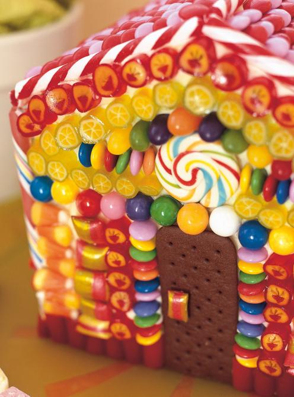

Hansel and Gretel House

The Hansel and Gretel House Cake
The Hansel and Gretel House is a wonderful recipe to satisfy any sweet tooth.
Ingredients for the cake
- 1 cup (250 ml) unsalted butter, softened
- 2 cups (500 ml) sugar
- 2 teaspoons (10 ml) vanilla extract
- 4 eggs
- 3 cups (750 ml) flour
- 4 teaspoons (20 ml) baking powder
- 1/2 cup (125 ml) cocoa powder
- 1 pinch of salt
- 1 1/2 cups (375 ml) milk
Ingredients for the frosting
- 4 cups (1 litre) icing sugar
- 1 cup (250 ml) unsalted butter, softened
- 3 tablespoons (45 ml) 35% cream
Plus: get yourself some sweeties like Smarties, licorice sticks or even chocolate buttons to decorate the external parts of the house.
How to bake your Hansel and Gretel house
Take your time with these steps!
- Preheat the oven to 180 ºC (350 ºF)
- For the first cake recipe, butter two 20-cm (8-inch) square cake pans. For the second cake recipe, butter one 20-cm (8-inch) square cake pan and one 20 x 10-cm (8 x 4-inch) loaf pan
- In a bowl, cream the butter with the sugar and vanilla extract. Add the eggs, one at a time, beating until smooth
- In another bowl, combine the flour, baking powder, cocoa powder, and salt. Stir in the previous mixture alternately with the milk
- Pour into the pans. Bake in the middle position of the oven for about 30 minutes or until a toothpick inserted in the centre of the cake comes out clean
- Unmould the cakes and let cool on wire racks
- You get three square cakes, and a rectangular cake.
How to make the frosting
This bit is easy!
- In a bowl, beat all the ingredients until smooth.
How to build your house
- Spread frosting over the 3 squares cake. Layer them on a large platter. Cut the rectangular cake diagonally into two triangles that will form the sloped roof of the house. Spread frosting on the two highest sides and stick them together to form the middle of the roof
- Frost the cake and decorate with candies, as desired.
Return to recipes